Home
Products
Oat drink
Chilled oat drink
Cooking
Oatgurt
All products
Tastebuds
Look book a/w 25
Look book s/s 25
Future of taste
News
Last first dates
Tastes like Miami
Oatly x Nespresso
How to do the blind taste test
Sustainability
Oatly who?
The oatly sustainability update 2024
Oatly's sustainability plan
Product climate footprint
Health
Welkom bij Oatly
We exist to make it easier for people to live healthier lives without recklessly taxing the planet's resources in the process.
Read more 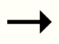
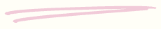
The future of taste
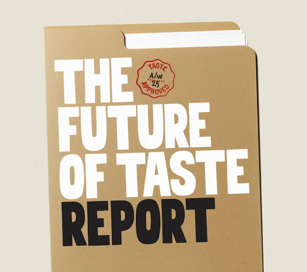
Ginger nut chai
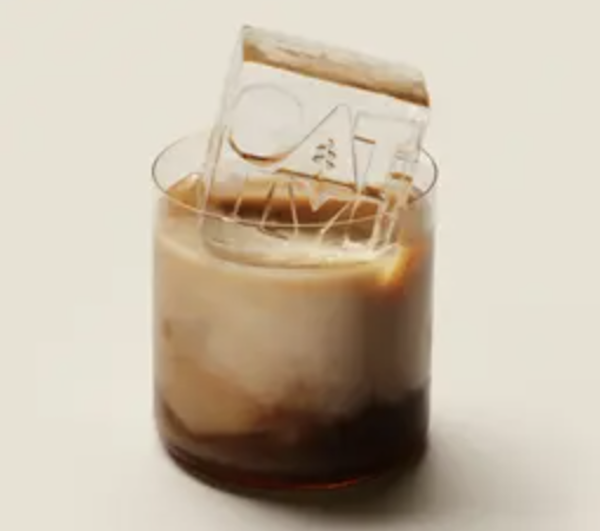
The oatly look book autumn/winter 2025
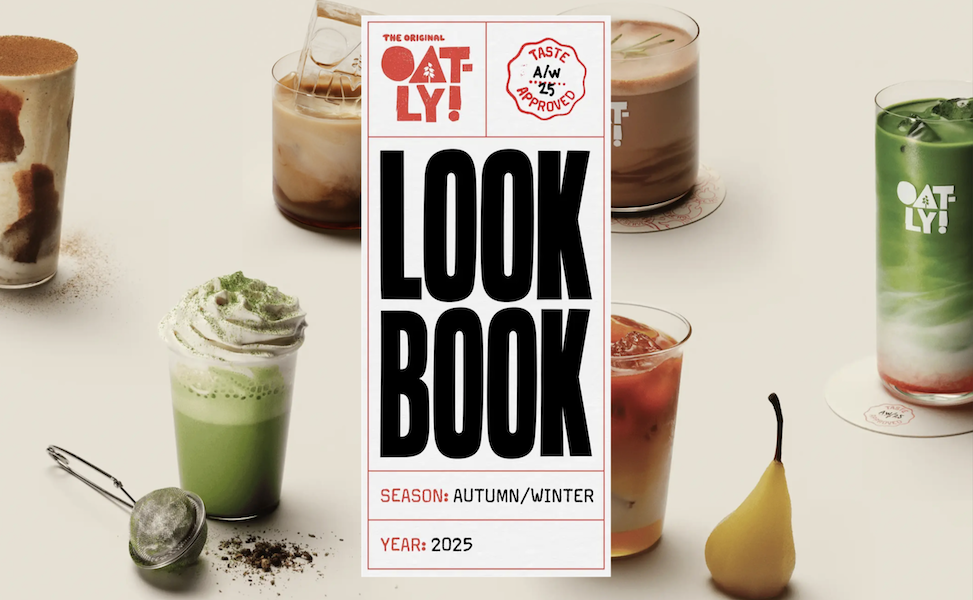
Oat drink matcha
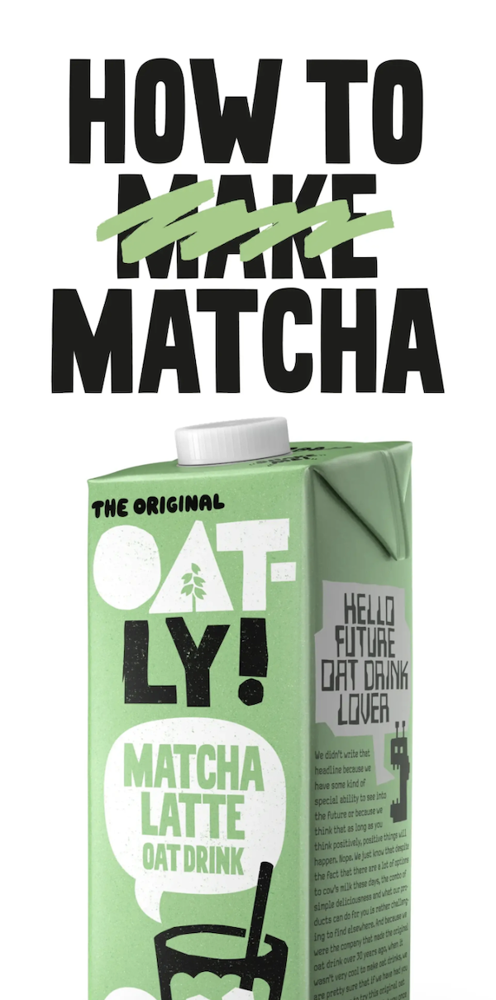
Mucho macha
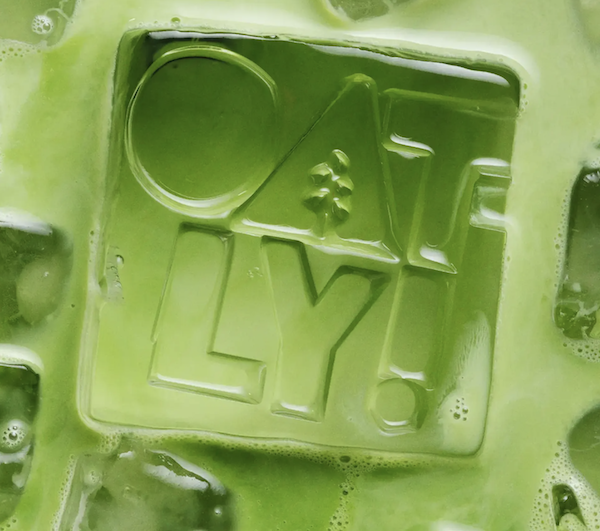
Show more
Oatly blind taste test
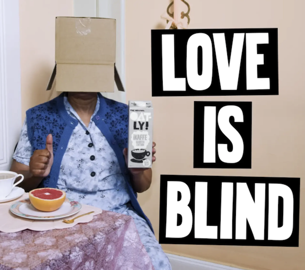
Small healthy book
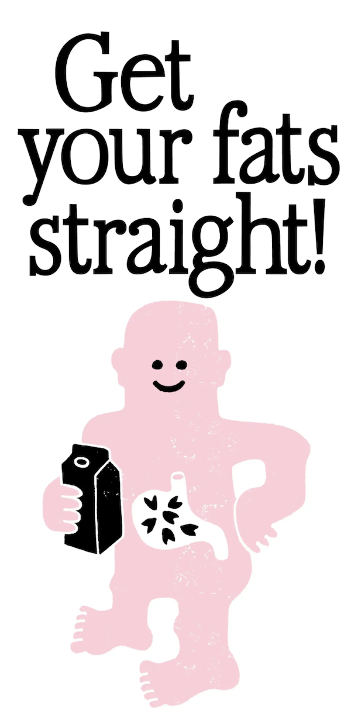
Oat drink barista edition
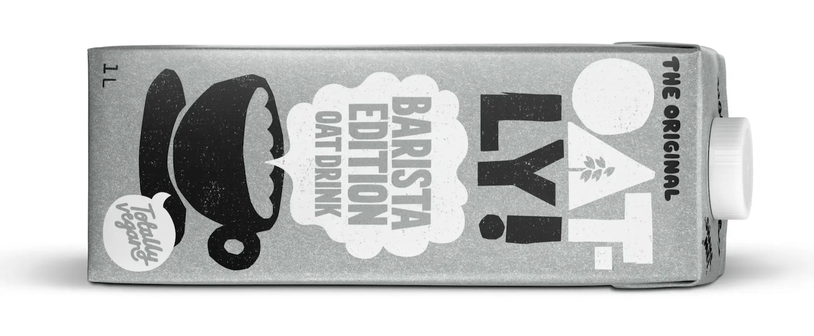
Oat drink barista popcorn flavour
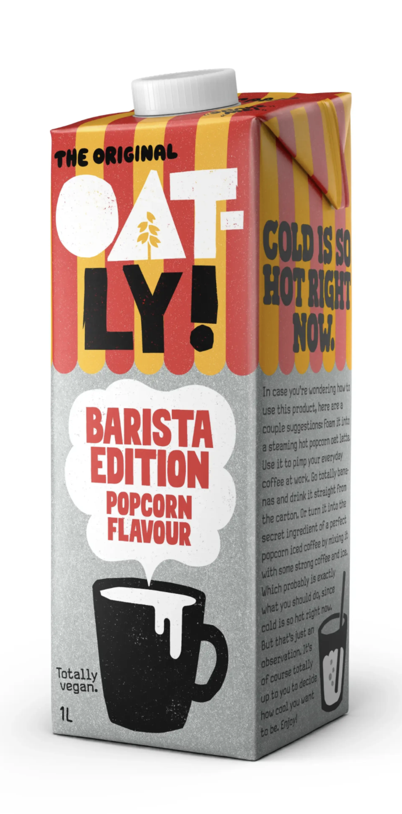
Oatly who?
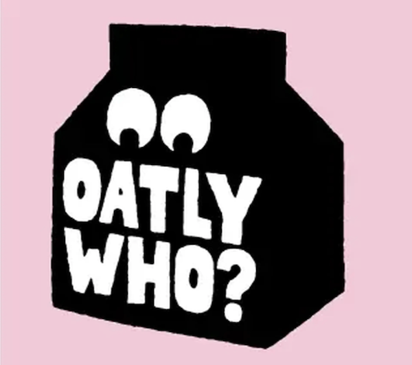